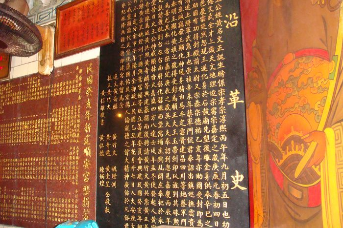
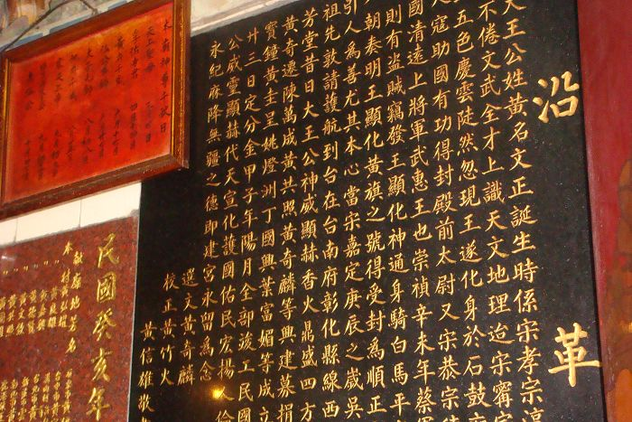

順 安 宮 是 一 座 古 廟 ， 內 供 奉 順 政 府 大 王 公。
這 位 是 順 安 宮 的 廟 公 ，在 這 以 待 30 年 了 。
 
這 是 裡 面 的 沿 革 史。
這 是 一 間 古 老 的 廟宇 ， 內 部 的 裝 潢 非 常 古 老 ， 也 因 為 這 樣 的 古 老， 使 得
廟 宇 的 維 修 經 費 很 高 ， 廟 公 說 這 間 廟 因 該 有 20 0 年 歷 史 了 ! !廟 公 人 很 親 切 ，由 於
那一 天 廟 婆 不 再 ，所 以 廟 公 很 熱 情 的 招待 我 們 。
這 間 廟 讓 我 印 象 最 深 的 是 ' ' 廟 公 ' '， 因 為 他 一 直 叫 我 們 要 好 好 的 讀
書 ， 別 出 了 社 會 做 個 壞 人 ! ! 我 很 認 同 他 的話 ， 因 為 社 會 實 在 是 太 亂 的 了 . . . . .
. . 種 種 的 教 訓 一 直 提 醒 我 說 我 ( 們 ) 現 在 還 是 很 幸 福 ， 所 以 別 再 抱 怨 生 活 不 如 意
了 ! !
<--回寓埔村首頁 |